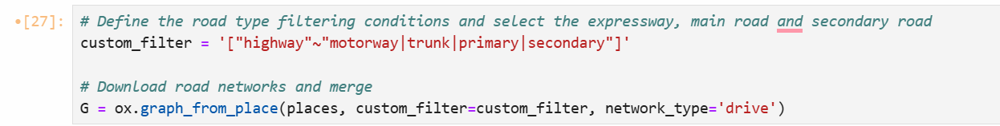

Transportation-related air pollution in Beijing has emerged as a significant environmental concern, exacerbated by the rapid urbanization and increasing vehicular traffic in the city. This research aims to investigate the correlation between Beijing road networks' centrality and air pollution, providing insights into air pollution sources and future urban development strategies to improve public health trends. This paper focuses on primary, secondary, and motor roads in central Beijing districts (Chaoyang, Haidian, Shunyi, Dongcheng, Xicheng, and Shijingshan), using roadmaps obtained from OSM (open street map) and spatiotemporal data of PM2.5 obtained form Bejing Air Quality Monitoring Stations. This paper analyzes the road centrality using three centrality measures in graph theory (degree centrality, closeness centrality, and betweenness centrality). Using Kernel Density Estimation and inverse distance weighting, research results demonstrate a "center-periphery model", with the highest centrality at North Fifth Ring Road, North Third Ring Road, Xuanwumen Nei Street, and West Chang'an Street Road. Through correlation analysis, road centrality and congestion over peak/low congestion times demonstrated a strong positive correlation with the spatiotemporal data of PM2.5 in Beijing.
Keywords: Road Centrality, Air Pollution, Correlation Analysis, Kernel Density Estimation, Inverse Distance Weighting
China's rapid urbanization has significantly improved people's daily quality of life; however, it has also posed substantial challenges to the living environment, with air pollution remaining a key concern in urban environmental health. As the economy continues to develop and energy consumption increases, the spatiotemporal distribution of urban air pollution has been greatly affected. As one of the largest and most dynamic cities in the world, Beijing faces the dual challenge of managing growing traffic volumes and mitigating air pollution, with fine particulate matter (PM2.5) being the primary pollutant [1]. As a vital component of urban infrastructure, road networks play a crucial role in the spatial dispersion of pollutants, and the resulting traffic flow further exacerbates air pollution. Road centrality is an indicator used to assess the importance of roads within an urban traffic network, with roads of high centrality typically bearing higher traffic volumes. Understanding the interaction between road centrality and air quality is essential for designing sustainable cities and reducing environmental health risks.
The relationship between road networks and air pollution has been widely studied, with most research focusing on vehicle emissions as a key factor contributing to air quality degradation [2, 3]. However, little attention has been paid to how the spatial centrality of roads interacts with pollution patterns. In studying road centrality, one prevalent method involves the application of graph theory, where road networks are represented as graphs with nodes denoting intersections and edges representing road segments. Using this approach, we derive road centrality, which measures the importance of a road within the overall traffic network. Road centrality metrics, such as betweenness centrality, can reflect the significance of specific roads in facilitating urban mobility and traffic flow [4]. Areas with high centrality often experience heavier traffic flow, which may intensify nearby pollutant concentrations, and the central role of road centrality in the traffic network may have a significant impact on air pollution dispersion patterns. Despite these critical factors, the relationship between road centrality and pollution remains insufficiently explored.
Beijing’s complex urban structure and diverse land use patterns provide a unique opportunity for studying such correlations. Previous studies have shown that due to factors such as meteorological conditions, urban morphology, and pollution sources, the spatial distribution of air pollution in Beijing exhibits significant temporal variability [5,7]. Wang et al. [6] further demonstrated that the spatial distribution of air quality in Beijing tends to be higher in the south, lower in the central areas, and shows more pronounced variation in the plains compared to mountainous regions. However, these studies have not considered how road centrality influences these distributions. To fill this gap, this study employs GIS spatial analysis techniques combined with graph theory analysis, using ArcMap software and Python tools, with the aim of exploring the correlation between road centrality and air quality distribution (PM2.5) in the six central districts of Beijing.
In this study, the central urban areas of Beijing (Chaoyang, Haidian, Shunyi, Dongcheng, Xicheng, and Shijingshan) was selected as the main research areas. First, the osmnx library was used to obtain OSM road network data without topological errors, and edge betweenness centrality was used to study the road centrality of this area. Next, air quality data during peak hours was obtained by processed the data from official data sources of 35 air quality monitoring stations in Beijing through screening. The Inverse distance weighted (IDW) interpolation method was then used to obtain air quality data covering the entire area of beijing. Finally, a correlation analysis was conducted between the processed road centrality data and air quality data to investigate the correlation and spatial distribution characteristics between these datasets. Section 2 of the research manuscript mainly introduces the data utilized within this study; Section 3 elaborates on the specific methodologies and underlying principles employed; Section 4 describes the primary research procedures; Section 5 presents and discuses the research outcomes; and Section 6 summarizes this study.
The main contributions of this study include:
1) Extending the application of road centrality metrics beyond traditional transportation or urban traffic studies to the field of environmental research;
2) Revealing the correlation between traffic flow and air pollution, as well as their spatial interrelationship;
3) Providing actionable insights for urban planners through spatial distribution maps, such as identifying areas with both high road centrality and high pollution levels as key focus areas.
Beijing is the capital of the People's Republic of China, the political center of China, a cultural hub, an international exchange center, a hub for technological innovation, and a first-tier global city. The central area of Beijing is located at 116°20′ east longitude and 39°56′ north latitude. As of October 2023, Beijing administers 16 districts with a total area of 16,410.54 square kilometers. By the end of 2023, the permanent population of Beijing was 21.858 million. Beijing has a warm temperate semi-humid continental monsoon climate, with hot and rainy summers, cold and dry winters, and short springs and autumns. The terrain of Beijing is generally higher in the northwest and lower in the southeast. The topography of the entire city is composed of two major geomorphic units: the northwest mountainous area and the southeast plain.
Among these, the six core districts of Beijing are the main focus of this study, known as the central urban area of Beijing, mainly including Dongcheng District, Xicheng District, Chaoyang District, Haidian District, Fengtai District, and Shijingshan District. According to the results of Beijing's Seventh National Population Census, as of November 1, 2020, the resident population of the central urban area was 10,988,587, accounting for 50.2% of the city’s total resident population, while covering only about 1,381 square kilometers—less than 10% of the city’s total area. Therefore, urban road planning and environmental quality monitoring for this area are particularly crucial.
Geofabrik is used in this paper to obtain the relevant OSM data. Geofabrik a globally available and frequently updated platform that provides road network data. This road network shapefile data for the Beijing area. The road network data contains abundant information about roads, including codes, names, classifications, maximum speed limits, lengths, and more. This study will primarily focus on roads classified as motorway, trunk, primary, and secondary levels.
The conversion of the road network into a graph is necessary for road centrality analysis. Thus, correcting and simplifying topological errors held significant importance. The results of the topological inspection carried out using ArcGIS are illustrated in Figure 2 provided.
Since manual modifications are required for topological checks using ArcGIS, and considering the extensive scope of road networks involved in this study, following a review of the literature, OSMnx, a Python library, was used to aid in the topological correction and simplification of roads, as depicted in Figure 4.
The air quality data in Beijing is sourced from the Beijing Environmental Protection Monitoring Center (http://www.bjmemc.com.cn/), with daily updates. The data for this study covers the period from January 1, 2024, to October 26, 2024, with records from 35 air quality monitoring stations collected each day, at hourly intervals.
This study primarily investigates the relationship between road centrality during peak hours and air quality. Therefore, specific processing steps were applied to the air quality data. Initially, air quality data from 7:00 to 9:00 and 17:00 to 20:00 were selected for peak hour analysis. Subsequently, missing values were removed after examining data using python, and the average air quality data for all peak hours from January to October were computed, corresponding to each monitoring station. Finally, the CSV data was converted to shapefile data using ArcGIS.
In network analysis, centrality measures play a crucial role in identifying the most influential nodes within a network[10]. Three common types of centrality measures include Degree Centrality, Betweenness Centrality, and Closeness Centrality. Degree Centrality focuses on the number of direct connections a node has in a network. Nodes with high degree centrality are considered pivotal hubs within the network, as they are directly linked to a significant number of other nodes. This measure is simple to calculate and provides insights into the local importance of nodes. Closeness Centrality assesses how quickly a node can interact with other nodes in the network. Nodes with high closeness centrality have shorter average distances to all other nodes, enabling them to efficiently disseminate information or influence within the network. This measure highlights nodes that are central in terms of overall network accessibility. Betweenness Centrality quantifies the extent to which a node lies on the shortest paths between pairs of other nodes in the network. Nodes with high betweenness centrality act as bridges or gatekeepers within the network, facilitating communication between different parts of the network. They are crucial for maintaining network connectivity.
According to the research objectives of this study and the direct correlation between air quality and road traffic flow, this paper opts to explore road centrality using Edge Betweenness Centrality (EBC), which closely aligns with road traffic flow. EBC is a significant metric in graph network analysis used to assess the importance of an edge within a network. Specifically, it indicates the frequency of a particular edge being part of the shortest paths in the network. Edges with high Edge Betweenness Centrality often serve as crucial bridges connecting different subregions or subgroups within the network.
For an undirected or directed graph, the Edge Betweenness Centrality for an edge eee is defined as the proportion of the total number of shortest paths that pass through that edge to the total number of shortest paths. The formula is as follows:
Where: V is the set of all nodes in the graph; σst is the total number of shortest paths from node s to node t; σst (e) is the number of shortest paths from node s to node t that passes through edge e.
Inverse Distance Weighting (IDW)[9] is a distance-based spatial interpolation method commonly used in Geographic Information Systems (GIS) and spatial data analysis. It assumes that known points closer to the interpolation point have a greater influence on the interpolated value, with the weight inversely proportional to the distance. In this study, we utilize this method to predict interpolation of PM2.5 data in the research area.
Here, z(x) represents the value at the interpolation point x; Zi represents the value at known point i; Wi represents the weight of known point i; di represents the distance between the interpolation point x and i; p controls the degree of weight decay with distance; and n denotes the number of known points.
This study employs the Kernel Density Analysis method in spatial analysis within ArcGIS to examine the overall distribution of road centrality. This method is primarily based on kernel density estimation [10], distributing each point or line into a distribution function across the entire spatial extent to generate a density distribution map. The following formula pertains to calculations for line features:
Where f̂(x, y) is the estimated density value at position (x, y); L is the total length of the line feature; h is the bandwidth used to control the smoothing range of the kernel function; K is the kernel function used to calculate the smoothing weight of the distance; d(l, x, y) is the Euclidean distance from any point on line l to (x, y); and dl is the integral element on the line feature.
The Pearson correlation coefficient [11], symbolized as r, serves as a fundamental statistical measure for evaluating the strength and direction of a linear relationship between two continuous variables. Operating within a range of -1 to 1, where a value of 1 signifies a perfect positive correlation, -1 indicates a perfect negative correlation, and 0 denotes no linear relationship, this coefficient is derived by dividing the covariance of the variables by the product of their standard deviations. Widely utilized in academic research, the Pearson coefficient enables scholars to quantitatively analyze the extent to which variations in one variable are associated with changes in another, thereby providing essential insights into the nature of their interdependence. This paper uses this correlation coefficient to study the correlation between road centrality and air quality.
Among them, xi and yi are sample points; x̄ and ȳ are the mean values of the sample points; n is the number of sample points.
In this study, OSMnx's edge_betweenneess_centrality was initially employed to compute the edge betweenness centrality of the road network. By integrating this attribute into the road network data and categorizing it into levels, an accurate road centrality level map was generated. Subsequently, kernel density analysis was conducted on the updated road network data to visualize the distribution of road centrality across Beijing. Following this, inverse distance weighting interpolation was applied to the air quality monitoring station data to create an air quality distribution map for Beijing. The data pertaining to road centrality and air quality distribution were then extracted using maps of the central urban area. Finally, utilizing Python and the corrcoef method from NumPy, a correlation analysis was performed on the two distribution maps.
Based on the calculated values of edge betweenness centrality, we classified them into levels. From the legend, roads colored green indicate lower centrality values, while those appearing yellow or even red signify increasing centrality values. The figure reveals that outside the North Fifth Ring Road, the overall centrality values are lower compared to the inner areas. This pattern may relate to the land use characteristics of these regions, such as residential areas, green spaces, or lower-density functional zones, resulting in lower traffic flow. Roads like the North Fifth Ring Road, North Third Ring Road, Xuanwumen Inner Street, and West Chang'an Avenue exhibit relatively higher centrality. These roads are predominantly main arteries or transportation hubs, linking crucial functional zones, densely populated areas, and serving as key nodes for traffic flow.
Kernel density estimation was conducted on road centrality to produce the above figure. The graph presents a clearer distribution of centrality. Key features include a gradual decrease in centrality values from the interior to the exterior regions, with the highest centrality area (depicted in white) primarily concentrated in the eastern parts of Dongcheng District, Xicheng District, and the eastern section of Haidian District. This distribution correlates closely with the regional functional layout, with Dongcheng and Xicheng districts hosting numerous commercial centers, government institutions, and historical districts, leading to concentrated traffic demands. However, the centrality near Beiwu Village Road in Haidian District notably ranks lower than its surrounding areas. Situated on the southern edge of Haidian District, this area remains significant but may suffer from poor road layouts or connectivity issues affecting its traffic importance.
Inverse distance weighting interpolation analysis was conducted on processed air quality data to generate the aforementioned air quality distribution map. The map also exhibits a hierarchical structure, showing a gradual improvement in air quality from the southeastern to northwestern parts of Beijing's six urban districts. This trend could be attributed to several factors. The southeastern urban districts experience higher industrial activity, greater population density, and more concentrated emissions from vehicles and other pollutants, leading to poorer air quality. In contrast, the northwestern areas boast higher greenery levels and less industrial activity, fostering a better air quality environment. Additionally, terrain factors may influence air quality distribution, with the northwestern regions being closer to mountainous areas, facilitating pollutant dispersion and dilution, while the lower-lying southeastern areas are more prone to pollutant accumulation.
This study reveals a moderate positive correlation (correlation coefficient of 0.44) between edge betweenness centrality of roads in Beijing's central urban area and air quality. The results suggest that regions with higher edge betweenness centrality in the road network are often associated with poorer air quality.
Roads with high edge betweenness centrality typically serve as major traffic arteries with high vehicle volumes and increased traffic emissions. This may be a primary reason for the poorer air quality near high centrality roads. Additionally, these high centrality roads could act as critical pathways for pollutant dispersion, with pollutants from traffic emissions spreading along these key routes, affecting the air quality of adjacent areas. High centrality roads may also face severe traffic congestion during peak hours, leading to significant emissions from vehicles running at low speeds or in idle states, further exacerbating air pollution.
The correlation coefficient of 0.44 indicates a certain relationship between road centrality and air quality, but air quality is not solely determined by road centrality. Factors such as industrial emissions, residential emissions, and other pollutant sources apart from traffic emissions can significantly impact air quality. Meteorological conditions like wind speed, wind direction, and humidity can alter pollutant dispersion pathways, weakening the direct influence of road centrality on air quality. Different functional zones (e.g., residential areas, industrial zones, commercial areas) contribute differently to traffic flow and air pollution, leading to spatial heterogeneity in the relationship between road centrality and air quality. The correlation results suggest that the spatial distribution of air pollution from high edge betweenness centrality roads may exhibit spatial clustering effects. For instance, core areas of the road network like commercial districts or transportation hubs might be more prone to poorer air quality conditions.
This study utilized air quality data from both peak and off-peak hours, but the correlation analysis was based on overall results. Future research could further analyze correlations across different time periods to explore whether traffic peak hours lead to stronger correlations.
Based on the above findings, for roads with high edge betweenness centrality, measures such as improving traffic flow management (e.g., optimizing traffic signals, diverting traffic) can help reduce pollutant emissions. Promoting the use of new energy vehicles and public transportation along high-centrality roads is encouraged to decrease motor vehicle emissions. Enhancing air quality monitoring near roads with high edge betweenness centrality can enable timely warnings of pollution risks. In future urban traffic network planning, reducing traffic pressure on high-centrality roads and reasonably allocating functional zones can help lower the risk of pollutant accumulation.
The study found a moderate positive correlation (correlation coefficient of 0.44) between road edge betweenness centrality and air quality in the central urban districts of Beijing. The results indicate that areas with high edge betweenness centrality in the road network are often associated with poorer air quality. High-centrality roads, such as major thoroughfares (e.g., the North Fifth Ring Road), experience heavier traffic, leading to increased emissions and deteriorated air quality in surrounding areas. The findings highlight the important role of road network structure in influencing air pollution and emphasize the need for targeted interventions in high-centrality areas. The study also found that factors such as industrial emissions, meteorological conditions, and spatial heterogeneity of functional zones influenced the observed correlations. These results underscore the complexity of urban air pollution dynamics and the multifaceted role of road centrality.
Future research should focus on incorporating additional variables such as real-time traffic data, meteorological factors, and pollution source identification to gain a more comprehensive understanding of the interaction between road networks and air quality. Additionally, further temporal analysis, especially distinguishing between peak and off-peak hours, could refine the observed correlations and provide more targeted insights for urban planning and policymaking.
From a practical perspective, enhancing traffic flow management, promoting the use of clean energy vehicles, and optimizing the spatial layout of functional zones can help mitigate the negative environmental impacts of high-centrality roads. In particular, targeted pollution control measures should be prioritized, such as strengthening air quality monitoring and developing green infrastructure in high-centrality areas, to improve urban sustainability and public health.
[1] Wang, Z. B., Li, J. X., & Liang, L. W. (2020). Spatio-temporal evolution of ozone pollution and its influencing factors in the Beijing-Tianjin-Hebei Urban Agglomeration. Environmental Pollution, 256, 113419.
[2] Sun, Chuanwang & Zhang, Wenyue & Fang, Xingming & Gao, Xiang & Xu, Meilian, 2019. "Urban public transport and air quality: Empirical study of China cities," Energy Policy, Elsevier, vol. 135(C).
[3] Kurnykina, O. V., Popova, O. V., Zubkova, S. V., Karpukhin, D. V., Pavlov, V. P., Varenik, P. K., ... & Novitskaya, L. Y. (2018). Air pollution by road traffic and its measurement methods. EurAsian Journal of BioSciences, 12(2).
[4] Freeman, L. C. (1977). A set of measures of centrality based on betweenness. Sociometry.
[5] Xing, Q., & Sun, M. (2022). Characteristics of PM2. 5 and PM10 Spatio-Temporal Distribution and Influencing Meteorological Conditions in Beijing. Atmosphere, 13(7), 1120.
[6] Wang, L., Xiong, Q., Wu, G., Gautam, A., Jiang, J., Liu, S., ... & Guan, H. (2019). Spatio-temporal variation characteristics of PM2. 5 in the Beijing–Tianjin–Hebei Region, China, from 2013 to 2018. International journal of environmental research and public health, 16(21), 4276.
[7] Ding, J., Ren, C., Wang, J., Feng, Z., & Cao, S. J. (2024). Spatial and temporal urban air pollution patterns based on limited data of monitoring stations. Journal of Cleaner Production, 434, 140359.
[8] Okabe, A., Satoh, T., & Sugihara, K. (2009). A kernel density estimation method for networks, its computational method and a GIS‐based tool. International Journal of Geographical Information Science, 23(1), 7-32.
[9] Khouni, I., Louhichi, G., & Ghrabi, A. (2021). Use of GIS based Inverse Distance Weighted interpolation to assess surface water quality: Case of Wadi El Bey, Tunisia. Environmental Technology & Innovation, 24, 101892.
[10] Kazerani, A., & Winter, S. (2009, June). Can betweenness centrality explain traffic flow. In 12th AGILE international conference on geographic information science (pp. 1-9). Germany: Leibniz Universität Hannover.
[11] Franzese, M., & Iuliano, A. (2018). Correlation analysis. In Encyclopedia of bioinformatics and computational biology: ABC of bioinformatics (Vol. 1, pp. 706-721). Elsevier.